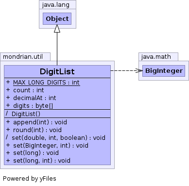

final class DigitList extends Object
DigitList handles the transcoding between numeric values and
strings of characters. It only represents non-negative numbers. The
division of labor between DigitList and
DecimalFormat is that DigitList handles the radix
10 representation issues and numeric conversion, including rounding;
DecimalFormat handles the locale-specific issues such as
positive and negative representation, digit grouping, decimal point,
currency, and so on.
A DigitList is a representation of a finite numeric value.
DigitList objects do not represent NaN or infinite
values. A DigitList value can be converted to a
BigDecimal without loss of precision. Conversion to other
numeric formats may involve loss of precision, depending on the specific
value.
The DigitList representation consists of a string of
characters, which are the digits radix 10, from '0' to '9'. It also has a
base 10 exponent associated with it. The value represented by a
DigitList object can be computed by mulitplying the fraction
f, where 0 <= f < 1, derived by placing all the digits of
the list to the right of the decimal point, by 10^exponent.
Locale,
Format,
ChoiceFormat,
MessageFormat
| Modifier and Type | Field and Description |
|---|---|
int |
count |
int |
decimalAt
These data members are intentionally public and can be set directly.
|
byte[] |
digits |
static int |
MAX_LONG_DIGITS
The maximum number of significant digits in an IEEE 754 double, that
is, in a Java double.
|
| Constructor and Description |
|---|
DigitList() |
| Modifier and Type | Method and Description |
|---|---|
void |
append(int digit)
Appends digits to the list.
|
void |
round(int maximumDigits)
Round the representation to the given number of digits.
|
void |
set(BigInteger source,
int maximumDigits)
Set the digit list to a representation of the given BigInteger value.
|
(package private) void |
set(double source,
int maximumDigits,
boolean fixedPoint)
Set the digit list to a representation of the given double value.
|
void |
set(long source)
Utility routine to set the value of the digit list from a long
|
void |
set(long source,
int maximumDigits)
Set the digit list to a representation of the given long value.
|
public static final int MAX_LONG_DIGITS
public int decimalAt
The value represented is given by placing the decimal point before digits[decimalAt]. If decimalAt is < 0, then leading zeros between the decimal point and the first nonzero digit are implied. If decimalAt is > count, then trailing zeros between the digits[count-1] and the decimal point are implied.
Equivalently, the represented value is given by f * 10^decimalAt. Here f is a value 0.1 ≤ f < 1 arrived at by placing the digits in Digits to the right of the decimal.
DigitList is normalized, so if it is non-zero, figits[0] is non-zero. We don't allow denormalized numbers because our exponent is effectively of unlimited magnitude. The count value contains the number of significant digits present in digits[].
Zero is represented by any DigitList with count == 0 or with each digits[i] for all i ≤ count == '0'.
public int count
public byte[] digits
DigitList()
public void append(int digit)
final void set(double source, int maximumDigits, boolean fixedPoint)
source - Value to be converted; must not be Inf, -Inf, Nan,
or a value ≤ 0.maximumDigits - The most fractional or total digits which should
be converted.fixedPoint - If true, then maximumDigits is the maximum
fractional digits to be converted. If false, total digits.public final void round(int maximumDigits)
maximumDigits - The maximum number of digits to be shown.
Upon return, count will be less than or equal to maximumDigits.
This now performs rounding when maximumDigits is 0, formerly it did not.public final void set(long source)
public final void set(long source, int maximumDigits)
source - Value to be converted; must be >= 0 or ==
Long.MIN_VALUE.maximumDigits - The most digits which should be converted.
If maximumDigits is lower than the number of significant digits
in source, the representation will be rounded. Ignored if <= 0.public final void set(BigInteger source, int maximumDigits)
source - Value to be convertedmaximumDigits - The most digits which should be converted.
If maximumDigits is lower than the number of significant digits
in source, the representation will be rounded. Ignored if <= 0.